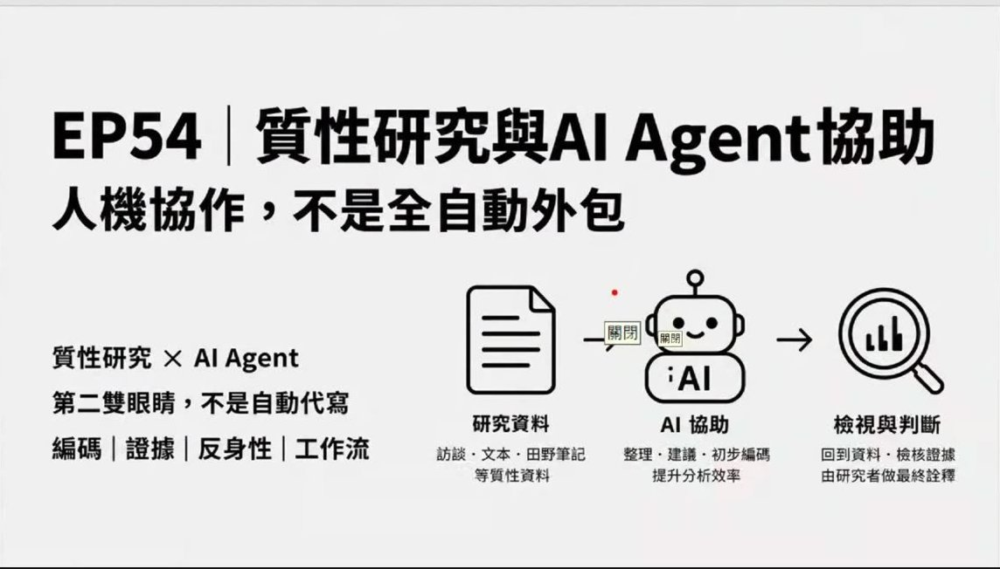
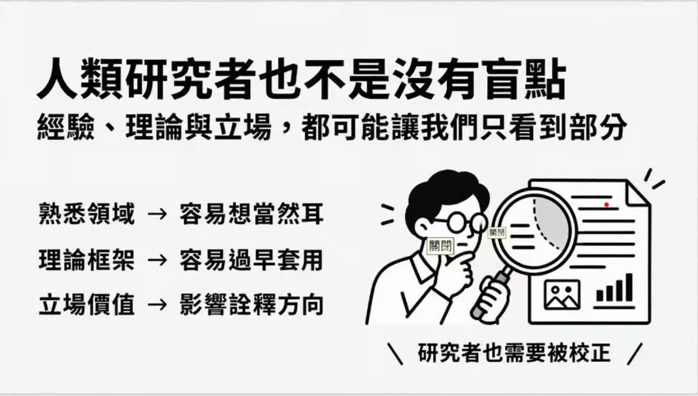
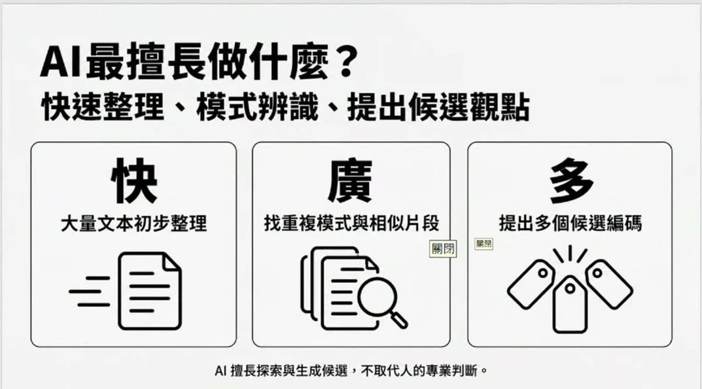
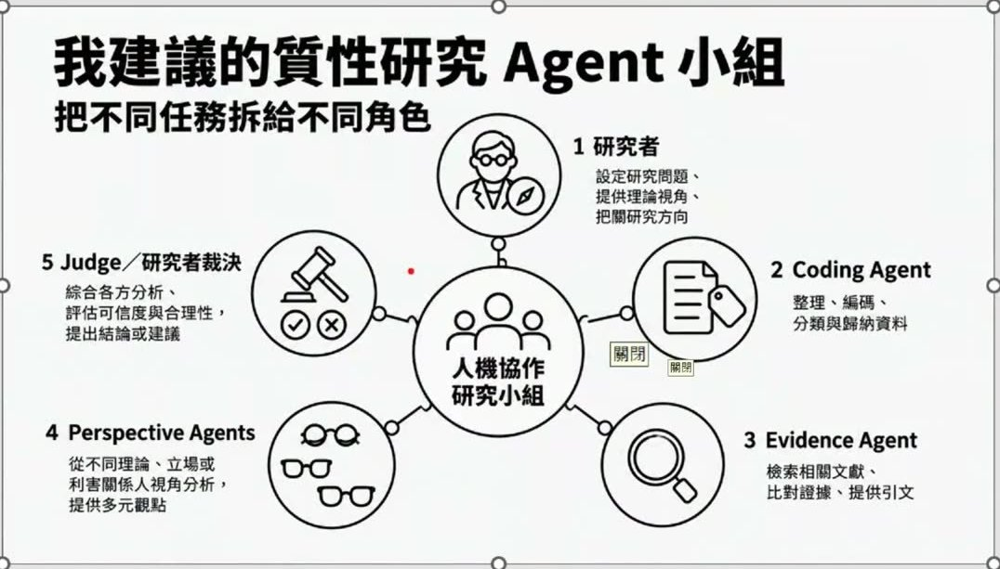
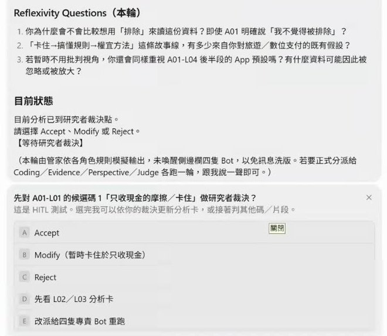
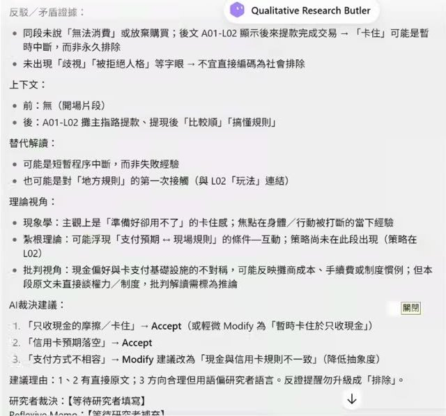
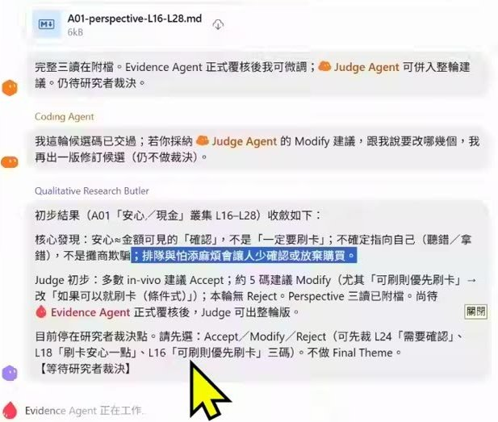
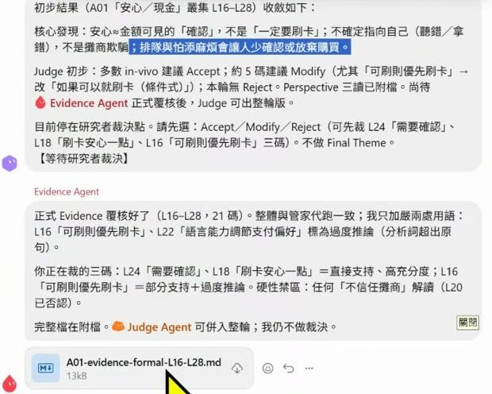

0. 課程資訊與教材
| 課程名稱 | 生成式AI應用電台 EP54｜質性研究與 AI Agent 協助（簡報副標「人機協作，不是全自動外包」） |
|---|---|
| 直播日期 | 2026/09/26（六）上午，本段錄影全長 47 分 40 秒 |
| 本堂主題 | 質性研究的逐字稿編碼能不能交給 AI、交到什麼程度；把編碼工作拆成五個 Agent 角色，讓每一筆候選編碼都綁回原文、停在研究者裁決點 |
| 課程節奏 | 老師開場說「今天只有 45 分鐘，最後留 15 分鐘 demo」。實際是前 31 分鐘講觀念（照簡報走）、31:30 起打開多 Bot 群聊做 Demo、43:20 之後收尾與課程預告。這是上週因趕車沒直播到的題目，補講，老師說後續（10 月的紮根理論課）會再發展更詳細的內容 |
| 要先準備 | 這堂不用裝任何東西。想跟著 Demo 做，需要一套能建立多個 Bot、再把它們拉進同一個群聊的 Agent 工具（老師用的那套需付費）；或照他 27:39 提到的傳統做法，用 ChatGPT 專案、Gemini 的 Gem 或 NotebookLM 各建一個角色來對照 |
📁 課堂用到的五份教材
錄影、簡報與四份講義由電台提供給報名學員，本頁不轉載也不提供連結。以下說明五份檔案各自在課堂上的用途，方便你對照筆記閱讀。
| 教材檔案 | 課堂上拿來做什麼 |
|---|---|
EP54 簡報（27 頁） | 整堂的觀念骨架。第 1～13 頁講為什麼不能全自動（人的盲點、AI 的三種問題、快廣多、反身性、爭議核心）；第 14～21 頁是 Agent 小組五角色、七步工作流與可追溯輸出格式；第 22～25 頁是 Demo 案例與三個 Step；第 26～27 頁是五條紅線與結語。課堂畫面上開的檔案是 23 頁的版本，發給學員的是 27 頁；第 3、4、5 頁（冰山圖、詠唱心法、VR 裝置）課堂上老師是切到另一份舊簡報講的 |
半結構式訪談大綱 | 研究主題「夜市外籍遊客消費與支付行為」的訪綱：倫理開場、所有受訪者共用的核心題組，以及外籍遊客、攤商、自治會三組各自的追問題。Demo 時和逐字稿一起上傳，管家 Bot 據此寫出 Research Setup（研究問題、方法、分析單位） |
模擬逐字稿 A01｜外籍遊客 | Demo 的主角。每一句都有片段編號（A01-L01、A01-L02⋯），Butler 先拿 L01「只收現金的摩擦／卡住」做人機裁決的測試，正式一輪則從 L16～L28「安心／現金」叢集做候選編碼 |
模擬逐字稿 A02｜夜市攤商 | 和 A01 一起上傳，管家回報「已讀到四份附件」。課堂時間不夠，這一份沒有展開；老師講攤商立場（方便、看不到錢、可能被扣稅）時用的是口述舉例 |
模擬逐字稿 A03｜夜市自治會 | 同上，作為對照組上傳。老師在第 2 章講「自治會要推、攤商不一定要」的立場差異時點到，Demo 未進入 |
🎬 課堂錄影
單段錄影，全長 47 分 40 秒。33:00 前後老師的電腦跳出容量不足，他離開處理後回來繼續，本頁照實記在第 6 章。
1. 一張圖看懂這堂
整堂只回答一個問題：逐字稿編碼交給 AI，交到哪裡為止？老師的答案是一個迴圈：AI 提候選、證據綁回原文、不同視角讀一次，然後停下來等你裁決。
2. 逐字稿丟給 AI 就算數？人有盲點，AI 也有
前 13 分鐘老師先把最常見的做法講出來，再一層一層說它哪裡不夠。
從 NVivo 到 AI：大家已經在這樣做了
質性研究要分析的多半是文字資料，過去用 NVivo 這類軟體找單詞、看情緒、跑文字雲，操作門檻不低。AI 的文字探勘能力起來之後，很多人直接拿它當質性分析的輔助工具，隨之而來的是兩個擔心：AI 會不會幫你多做解釋？逐字稿編碼會不會出問題？老師的回答是，這些擔心可以透過「把研究方法學到的技巧設計進 Agent 或自訂功能裡」來處理，而這堂課就是開端：先講國際上的趨勢與想法，留最後 15 分鐘 Demo「AI Agent 在分工上各自負責什麼，而且要設定成彼此可以互相監工」。

做得到，為什麼還不能全交出去
他很坦白：把訪談完的逐字稿丟給 AI，請它做主題編碼、選擇編碼、摘出重要文字，甚至寫成論文常見的「一段論述、下面縮排引述」格式，AI 都做得到。問題出在質性研究看的不只是表面現象（一度建構），還有受訪者內心的詮釋、他跟這塊土地與這件事的連結（二度建構）。這些是你進田野、做焦點團體、做深度訪談時觀察到的細微情緒反應，就算給 AI 再多 RAG、再多背景脈絡，它也不容易找到。
- AI 能做到的部分：老師估計「至少幫我抓個六、五到七成左右的脈絡」，讓你大致掌握情境。
- 剩下要交給人的部分：現象與現象、關聯與關聯，事件前後人事時地物之間的互動結果。
- 怎麼配合：AI 可以邊編你邊看它的初步想法，但要先給它訪談大綱和研究內容，不然它拿到一大堆逐字稿，就只是照裡面的關鍵字在連。
反過來的做法：讓 AI 先「存而不論」編一次
學質性研究時老師都會說「存而不論」：不帶主觀、不帶理論框架、先從比較客觀的角度看。老師建議把這件事也套在 AI 身上：
- 先不給訪綱，只把逐字稿丟給它，告訴它「這是質性研究的分析」（不說的話它會給你一個非常粗略的摘要）。這一次是字與字之間的關鍵，看受訪者同時談到什麼。
- 換一個帳號或視窗再做第二次（有訪綱的那次）。「你不要同一個帳號或同一個視窗，因為彼此的上下文是會互相影響的。」［08:30］
- 把兩次的結果跟你自己讀出來的東西對照，找出趨同與趨異，慢慢把故事拼出來。
他舉的例子就是這堂後面 Demo 用的案例：觀光夜市推動行動支付，受訪三方是外國遊客、攤商、自治會會長。三種立場進來之後，你才看得到誰認同、誰不認同、大家對這件事各自的故事。
人的盲點：訪綱一餵進去，故事線就被框住了
簡報第 6 頁的標題是「人類研究者也不是沒有盲點」。老師講的具體場景是：大家很常一開始就把訪綱餵給 AI，AI 就照訪綱形成標題、往裡面填東西，填完你再回頭想「故事線這樣發展合理嗎」。這種做法會漏掉訪綱沒問到的東西，例如自治會會長是推政策的人、攤商是接受政策的人，還有攤商乾脆說「我就不要電子支付，我就要現金買賣」，這幾種立場之間的落差，訪綱式的分析抓不到。所以反過來可以讓 AI 幫你點出：有沒有一些特殊立場是你當初沒看到的。

AI 的盲點：去脈絡化，還有它本來就是接龍機器人
老師說 AI 最大的問題是去脈絡化：它不管這個夜市在你心目中的樣子、不管你讀過多少 paper，就是針對你現成的資料、針對文字與文字之間的關聯做分析。沒給訪綱，它就是照關鍵字接龍；給了訪綱，它就照訪綱的脈絡依序找連結。這兩種都沒有錯，但都只能到六成，細節微小、沒被觀察到的部分要交給人類。
| 人類研究者的盲點（簡報第 6 頁） | AI 最容易出問題的地方（簡報第 7 頁） | |
|---|---|---|
| 第一種 | 熟悉領域 → 容易想當然耳 | 幻覺 → 補出原文沒有的意思 |
| 第二種 | 理論框架 → 容易過早套用 | 去脈絡 → 忽略情境與關係 |
| 第三種 | 立場價值 → 影響詮釋方向 | 過度自信 → 說得流暢但未必正確 |
| 一句話 | 研究者也需要被校正 | 看起來合理 ≠ 研究上成立 |
3. 把 AI 當 VR 裝置與探測器：拿來練，不拿來當受訪者
正式講編碼之前，老師先繞回三年前 GPT 剛出來時他做的兩個嘗試。這一章沒有截圖，因為重點全在口述的界線上。
為什麼要把 AI 當成田野
學質性研究的路徑通常是：先讀方法論、本體論，從演繹與歸納的邏輯、從亞里斯多德到哈伯瑪斯的論述切進去；要等到跟著老師做研究，才比較有機會知道深度訪談怎麼追問、焦點團體怎麼編排同質性與異質性、訪綱怎麼設計、編碼怎麼做。看教科書體驗不到。所以當時的想法是：有沒有機會把 AI 當成一個田野的情境，去練習追問的技巧？把 AI 當成訪談對象，練習你丟問題、腦力激盪的方式？讓它模擬你實際進田野會遇到的情況？
| 詠唱指令心法 | 技能移轉自 | 練什麼 |
|---|---|---|
| 情境設計 | 田野調查法 | 把 AI 設計成一個田野，你進去之後練習參與與觀察，模擬局內人的想法 |
| 追問 | 深度訪談法 | 把 AI 當受訪者，練習怎麼追問、怎麼往下挖 |
| 腦力激盪 | 焦點團體座談法 | 讓 AI 扮演多個參與者，練習你在團體裡怎麼拋問題、怎麼收斂 |
這三組對應取自簡報第 4 頁「詠唱指令心法：質性研究途徑」，老師在 13:50 前後把這一頁帶過。
兩個比喻
- VR 裝置：以前要進田野才知道怎麼變成局內人，你是做參與、做觀察、還是參與加觀察？沒到現場，看方法論的書很難想像。如果設計一個情境讓 AI 來對話、或把 AI 設計成一個田野，你進去之後就可以練習理解與思考局內人的想法。
- 探測器：存而不論的分析怎麼做？怎麼透過歸納法，一點一滴找出蛛絲馬跡、系統化地連結，透過編碼把概念抓出來之後，再把編碼與概念、概念與主題之間的關係結合起來，把故事說出來。這也可以讓 AI 輔助你練習。
界線：AI 能不能當受訪者？
老師提到最近看到幾篇還沒刊登的 paper 在談一件事：深度訪談的對象能不能是 AI？做法是先讓 AI 充分吸收某個現象的背景與歷史脈絡，然後研究者拿著訪綱依序去訪談它，它生出一大堆逐字稿，研究者再拿逐字稿做分析。他也提到最近選舉出現的「AI Agent 民調」，把選民設定成 Agent 來回答，不受時間空間限制。
| 用法 | 老師的判斷 | 理由 |
|---|---|---|
| 拿 AI 練追問技巧、練焦點團體的做法 | 當然沒問題 | 這是練習，不進論文 |
| 拿 AI 練 Coding、練研究技巧 | 可以 | 就算學術上不承認，還是可以拿來訓練自己 |
| 拿虛擬 AI Agent 回答的訪談資料做分析、當研究佐證 | 目前不太可能 | 「明明沒有去訪談這個人，卻生出五六十幾頁的逐字稿」，在學術倫理上不被承認。他說目前沒看過期刊接受，但不排除隨時間演變成其中一派 |
4. AI 擅長快、廣、多，最不能外包的是反身性
這一章是整堂的核心：先給 AI 該做的事，再講唯一一件不能給它的事。
AI 擅長什麼：快、廣、多
第一，它可以很快把文本做初步分析，這點沒人質疑，你只會擔心它有沒有真的讀、讀的是不是表面。第二，它至少可以把相似的片段抓出來。老師自己的操作是這樣：
- 把逐字稿丟給它，先很初步地說：「初步有哪些相同相異，你幫我列一張表吧。」
- 要求表裡要有相似之處，而且每一項後面要給來源：「你在哪一頁看到的，請告訴我。」相異之處同樣做法。
- 接著問它：如果以紮根理論為基礎，開放編碼、主題編碼、選擇編碼的過程中，你是如何做出來的？詳細告訴我。它就會列出一大堆 code 的過程。

最不能外包的：反身性（Reflexivity）
老師說人跟機器最大的不同叫做反身性，這也是質性研究常被提到的：我自己為何會去這樣理解？它決定了你怎麼呈現這個故事的脈絡、你的主題為什麼特殊、你的個人性、你的寫作邏輯。你跟田野現場的當事人想的不一樣，原因是什麼？當事人有他在脈絡中的意義，你則是從參與、觀察、感受、從他人的角度理解之後，把它詮釋成你自己的觀點。
怎麼跳脫？他給的方法是把反身性也用在 AI 身上：
- 先想 AI 為什麼會這樣編：AI 背後本來就是一個會順著你的話說的東西，你還一味相信它，等於又違反了反身性、放棄了獨立思考的空間。
- 把它當成田野裡在旁邊喊聲的人：它喊得比較大聲，是因為它站在大量資料的基礎上，看起來像是把精華結合起來了。這時候你要站在它的反立場：它帶著什麼立場？它在詮釋的時候排除了什麼？
- 寫下你認同和不認同它的地方：以前第一次看文本是粗略看，第二次才寫關鍵概念；現在 AI 幫你做到第二層了。但它的詮釋絕對是最表面的詮釋，請你進入第二層詮釋：問為什麼、為什麼這個人會這樣想、他講這段話背後的立場是什麼。
用攤商當例子：第二層詮釋長什麼樣
問攤商對行動支付的立場。第一層：方便，可以減少溝通，客人比一下、看牌子就好。第二層才是重點：看不到實際的錢；可能會被扣稅，因為錢經過第三方支付公司進到戶頭，過程中會被課到，而以前夜市攤販不用報稅；再往上一層，自治會為什麼要推：他們跟第三方有合作、有簽約，可能牽涉夜市整體的政策與文化，再加上消費者用電子支付有優惠、有 Coupon 券。AI 的編碼可以幫你找到「攤商多半提到手續費」這個趨勢，趨勢背後的邏輯要你自己細看，看看它寫的跟你想的有沒有落差。
5. 從 Chatbot 到 Agent 小組：一個管家加四個助手
觀念講完，老師用五分鐘把「怎麼用才不失真」翻成一個可以動手搭的結構。
為什麼不是一個機器人做完
傳統做法是用 ChatGPT 的專案、Gemini 的 Gem、NotebookLM 各自訓練不同的機器人來完成不同的事。到了 Agent，老師想要的是「我今天有個管家在幫我處理這些逐字稿文本的分析」，而且不會只有一個人：有定方向的、有做 Coding 的、有找證據的、有比較立場的、最後有一個做裁決的。這些角色互相對話、互相檢查，人在中間。

五個角色各做什麼、不做什麼
| 角色 | 做什麼（老師口述＋簡報第 15～19 頁） | 刻意不做什麼 |
|---|---|---|
| 1 研究者 | 定問題、定框架、定判準：研究問題是什麼、用什麼方法論與理論視角、接受／修改／拒絕的標準。老師說研究者 Agent 的用處是「幫你抓方向，至少不會偏太遠」 | 研究者仍是詮釋與責任中心，這一角不能整個交給 AI |
| 2 Coding Agent | 輸入逐字稿片段，輸出候選編碼＋理由。例：攤商談電子支付的缺點，手續費、錢要隔兩三天才進戶頭、現金流不夠、綁實際帳戶被告詐騙時整個鎖住沒法做生意，這些都是它該抓出來的片段與標籤 | 只提候選，不宣稱唯一答案；Candidate Codes ≠ Final Codes |
| 3 Evidence Agent | 每一個編碼都綁回原文：你講的這段話、你鋪陳的這個故事，是從哪些逐字稿出來的。老師說這跟統計的驗證不一樣，也可以再延伸去看過去文獻有沒有類似的 | 不重新編碼，只做支持／反駁證據的比對 |
| 4 Perspective Agents | 同一份資料用不同理論視角讀一次：現象學（經驗怎麼被感受）、紮根理論（概念怎麼從資料浮現）、批判視角（權力與制度怎麼影響）。老師口述時還列了建構論、女性主義 | 不裁決哪個視角對；不同結果不一定表示有人錯 |
| 5 Judge | 綜合各方分析，評估可信度與合理性，提出 Accept／Modify／Reject 的建議，並指出立場的變化（例如受訪者前面反對電子支付、後面又把立場調回來） | 「不是直接說我就定稿了」，最後一步永遠是研究者裁決＋Memo |
架構怎麼搭：主 Agent 加 sub-Agent，各有人設與 Skill
一個主體的 Agent（管家），底下是一群 sub-Agent 或 sub-Bot，每一個都有角色人設，而且可以灌給它相關的 Skill，讓它更符合人設。Coding 的時候至少要把原文抓出來，後面要引述、要寫論述才用得上；不同視角可以提供不同想法；最後有一個裁判給你「同意、修改、拒絕」的選項。
6. Demo：夜市支付案例，五隻 Bot 群聊跑一輪
「這個其實不難，你就試著做做看就可以完成。」［31:29］接下來 12 分鐘是實機操作，中間卡了一次電腦，本頁照實記。
案例設定
題目是夜市外籍遊客的消費與支付行為。老師選的場域是寧夏夜市，理由是外國人很容易到達。他想知道的是：外籍遊客為什麼可以直接用自己綁定的第三方支付，不用像我們出國逛夜市那樣先換現金。他預期 AI 會做出這幾層東西：
- 第一層編碼：「現金不敢用」，因為可能有假鈔、可能被搶。
- 第二層編碼：安全感、風險、信任制度化。
- 證據：找零的麻煩誰提到？刷卡比較安心誰提到？語言不通、怕算錯、用計算機比、用翻譯機，這些誰提到？
- 視角：同一段話，從現象學、紮根理論、批判的角度各看一次。
老師用的工具長什麼樣
他說這套工具最近很多人指定要上，因為它跳脫了一般用 Agent 的框架：一般人用 Agent 時沒有把角色區隔開來，就會覺得複雜、不清楚。這套工具裡每一個 Bot 都各自賦予身份，有一個管家，然後開一個群聊（有點像專案的功能），把所有角色拉進來。老師的順序是：角色還沒配 Skill、還沒給裝備，先開群聊，先叫大家自我介紹。管家會第一個發言，然後號令其他人依序介紹自己。
兩個做之前的建議
- 先 run 一次再正式做。「你其實要開始正式做之前，你可以先 run 一次」［37:24］：給它們一筆比較簡單的資料做完，看它們少了什麼、缺了什麼，再從中讓各角色去補 Skill 與角色設定。
- Skill 從單一角色開始想。「我會建議大家你要先從單一的去想」［38:00］：Coding Agent 的編碼邏輯是什麼？相同現象、相同概念怎麼編？用什麼方法？自訂指令、角色扮演、偏好回應、該做的 SOP，這些都可以變成 Skill。
實際跑起來：管家分派、少叫一個人、用 @ 補進來
四份檔案（訪談大綱＋三份逐字稿）丟進群聊後，管家回報「收到這四份資料」，先寫出 Research Setup（研究問題＝外籍遊客如何理解夜市支付選擇與交易經驗、方法＝半結構深度訪談、分析單位＝資料片段 ID），然後分派：請 Coding Agent 針對 A01-L16～L28 這七個片段，各給 1～3 個大框架的候選編碼，並說明理由。
這裡發生一件很真實的事：老師少叫了一個人，Evidence Agent 沒被拉進群聊。管家的反應是「沒關係他不在，我自己先跑」。老師接著在輸入框打「請加入」，用 @ 把 Evidence Agent 叫進來。進來之後管家說：剛才我代跑了 Evidence 的部分，交給你覆核或重做，以你的為主，因為你的人設與 Skill 比較齊全。Coding Agent 也主動告訴 Evidence：請以我稍早附的檔案為主，我不重新編碼，除非研究者要求改。


迭代：一邊等結果，一邊講三角檢證
等 Bot 跑的空檔，老師講了這堂最重要的一段。質性研究本來就是迭代，第一次看、第二次看、第三次看想法都不同；他希望人可以進到這個人機協作的空間，看它們做到什麼程度、編碼做了什麼。但你不能一味相信它，你還是要回來看你的綱要和訪談紀錄，才有辦法跟它們對話，不然只會被牽著鼻子走。大家常犯的錯就是它編完我們就接受，但它的編碼是表象的，只能當第二套。
初步結果：安心不等於一定要刷卡
「先給我一個初步結果」之後，管家收斂出 A01「安心／現金」叢集（L16～L28）的核心發現：安心約等於「金額可見的確認」，不是「一定要刷卡」；不確定指向自己（怕聽錯、拿錯），不是攤商欺騙；排隊與怕添麻煩會讓人少確認或放棄購買。Judge 初步建議多數 in-vivo 編碼 Accept、約 5 碼 Modify（尤其「可刷則優先刷卡」建議改成條件式的「如果可以就刷卡」），本輪沒有 Reject，然後停在研究者裁決點。老師說：「Coding 要等你，研究者就是我本人，他等我裁決是要往這個方向走。」［43:00］課堂到這裡就沒有再往下裁決。


7. 收尾：Skill 要拿下來調，紅線要自己守
最後四分鐘是老師的實務交代與課程預告，加上簡報最後兩頁他沒時間講的東西。
Skill 從哪裡來
- 老師這套質性研究各階段的 Agent 都是從 GitHub 上調整來的，不是同一個來源；每個階段搭配的 Skill 有的是改的、有的是自己建的。
- 要依你自己研究的需求調，「這個就是靠自己啦」。有些人會完全用 GitHub 上的，他不建議。
- 如果你是初學者、實務經驗少，可以先跟著 GitHub 上的 Skill 用一兩次，從中迭代、處理、學習。
課程預告（老師口述，時間與形式請以電台公告為準）
- 10 月的紮根理論課：會把紮根理論每一個階段（從編碼到形成理論）的 Skill 完整給學員，是他重新調過的改良版，並且會分「傳統改良版」與「AI 時代下的新版」兩套。他提到紮根理論的第二代、第三代傳人因為 AI 出現，正在做第三版的改良。
- 實體課：台北市中山站附近，每次 4～5 人，先以 Codex 為主，Claude Code 之後再說。理由是 Agent 類的課實體效果好，可以直接看著你的電腦告訴你 agent.md、Skill、設定要怎麼調。
- 今天的簡報與錄影回放會請小幫手放到訂閱制的雲端。
簡報最後兩頁：五條紅線與結語
時間不夠，老師沒有逐條講第 26、27 頁，但這兩頁是整套方法的底線，本頁補上（取自簡報畫面文字，不是課堂口述）：
| # | 研究品質與倫理：AI 介入的五條紅線 | 對照老師課堂上講到的地方 |
|---|---|---|
| 1 | 幻覺不可直接採信 | 第 2 章「看起來合理 ≠ 研究上成立」；第 6 章 Evidence 標過度推論 |
| 2 | 敏感資料要先去識別 | 第 4 章 26:30 提醒受訪者的機敏個資不要直接餵進去 |
| 3 | 提示詞與版本要留紀錄 | 第 6 章每一輪產出都是附檔 .md，管家會註明本輪範圍（L16～L28） |
| 4 | 不可把裁決權完全外包 | 第 5 章 Judge 只提建議；第 6 章「Coding 要等你，研究者就是我本人」 |
| 5 | 要能交代 AI 如何參與 | 第 5 章可追溯輸出格式；第 6 章「本輪由管家模擬輸出，未喚醒四隻 Bot」這種聲明 |
第 27 頁結語的三句話：AI 提出可能性、證據約束 AI、研究者負責意義與責任。標題是「AI 不是答案機，而是反思鏡」。
8. 這堂課真正在教的事
把 47 分鐘濃縮成四件事。四件都不是操作，是你在動手前要先站好的位置。
一、AI 做得到的事，跟你該不該讓它做，是兩個問題
老師從頭到尾沒有說 AI 不會編碼。它會，而且格式可以做得像論文。他反覆說的是六成：AI 抓得到六成脈絡，剩下的細微情緒、人事時地物的連結、二度建構的詮釋，是研究者自己進田野才拿得到的。所以問題從來不是「能不能用」，是「用了之後你還剩下什麼工作」。答案是：剩下最重要的那一段。
二、反身性不能外包，而且要反過來用在 AI 身上
「我為何這樣理解？我帶著什麼預設進場？我的詮釋排除了什麼？」這三個問題原本是問自己的。老師把它翻過來：AI 為什麼這樣編？它帶著什麼立場？它排除了什麼？把 AI 當成田野裡在旁邊喊聲的人，站在它的反立場看，你才會發現你跟它想的不一樣的地方在哪裡，而那個地方通常就是你的研究貢獻。
三、把工作拆給角色，讓每一筆編碼都綁得回原文
一個 Bot 做完所有事，你只會拿到一份很順、很合理、但不知道從哪裡來的分析。拆成研究者、Coding、Evidence、Perspective、Judge 五個角色之後，Coding 只能提候選、Evidence 必須回原文找支持與反證、Perspective 必須用三種理論各讀一次、Judge 只能給建議。Demo 裡 Evidence 把「可刷則優先刷卡」標成過度推論，就是這個結構在運作：證據約束 AI。
四、AI 的編碼當第二套，加上你自己那套，做三角檢證
「過去不會有一個人做三套 Coding。」現在可以：讓 AI 用兩種人設各編一套，加上你自己的，三套互相對照。這是這堂課給質性研究者最實際的一個新能力，前提是你真的有自己那一套，否則只是拿兩套 AI 的互相確認。老師收在簡報最後一頁的那句話是：AI 不是答案機，而是反思鏡。
9. 老師金句
10. 資料來源與整理說明
| 來源 | 2026/09/26 課堂錄影單段，全長 47 分 40 秒；課程教材五份（27 頁簡報＋半結構式訪談大綱＋三份模擬深度訪談逐字稿） |
|---|---|
| 整理方式 | 全程本機處理：擷取 48 張關鍵畫面、產生 229 段逐字稿，再依逐字稿手寫章節目錄。第 5、7 章另外對照簡報畫面文字補了老師沒時間講的頁面，並逐處標明 |
| 時間戳 | 章節標題與引文後方的［mm:ss］對應錄影播放器時間 |
| 整理 | 竹貞（Tarshar 的逐幀筆記專員） |
已知限制，請先看過再引用
- 逐字稿是機器產生的，人名與工具名會聽錯。本頁修正了可以由畫面或上下文確認的錯字（NVivo 被聽成「Avivo」、GitHub 被聽成「gipart／Giphar」、Claude Code 被聽成「Cloud Code」、反身性被聽成「反身系統／反生性」、人在迴圈被聽成「人在圍圈」、人味被聽成「人位」、六成被聽成「六層」、質性研究被聽成「直信／執行／直線研究」、逐字稿被聽成「足字稿／主治稿／獨字稿」、訪綱被聽成「訪章／坊綱／坊章」、GPT 與 Gem 被聽成「GPD／GEM」，共 11 類、49 處）；不確定的一律保留原樣，沒有猜測補詞。
- 四個聽不準的名稱本頁刻意不寫：老師示範的多 Bot 群聊工具（44:59「Goke 的 Buds」、46:30「gogbox」）、他提到的免費開源替代工具（46:30「AutoDox」）、23:31「他站在重能的基礎上」的「重能」、19:23「把銀汁湯湯的技術拉回來」那個詞。引用前請以老師的講義或公告為準〔待確認〕。
- 錄影開頭 00:00～00:58 是靜音時段，語音辨識產生了三句無意義的幻覺字幕，整理時已整段捨棄，不會出現在本頁。
- 老師的課程預告（10 月紮根理論課、實體課地點與人數、先以 Codex 為主）是口述內容，本頁只記錄他說了什麼，實際開課資訊請以電台公告為準。
- 可信度分級：金句章 16 則全部是錄影實錄（僅校正上述聽錯的詞）；第 6 章四張 Bot 對話截圖裡的候選碼、核心發現與覆核意見是從畫面上讀下來的，可能有辨識誤差，而且是 AI 在模擬資料上的產出，不是老師的研究結論；第 5 章的七步工作流與輸出格式、第 7 章的五條紅線與結語取自簡報畫面文字，不是課堂口述。
- 逐字稿中出現的學員稱呼、提問者暱稱，本頁一律隱去；Meet 介面本身的畫面（含右側聊天室與學員留言）一張都沒有選進本頁。
- 課堂截圖已裁掉線上教室右側的與會者欄位（原始畫面 1920×1080，只保留左側 1440×810 的螢幕分享區），並再裁掉 PowerPoint 功能區、Windows 工作列與群聊工具的帳號欄。本頁 8 張截圖約每 6 分鐘一張，全部是簡報頁或 Bot 對話畫面，講者鏡頭 0 張。
- 引用到作業、貼文或簡報之前，請對照錄影原始段落再確認一次。